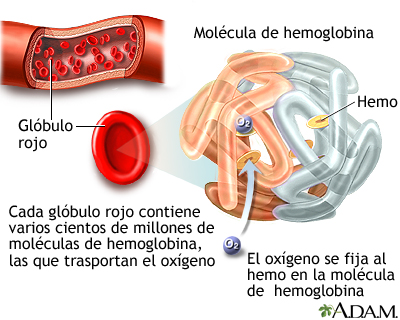

Anemia:
Es una afección por la cual el cuerpo no tiene suficientes glóbulos rojos sanos. Los glóbulos rojos le suministran el oxígeno a los tejidos corporales.
Los diferentes tipos de anemia incluyen:
Anemia por deficiencia de vitamina B12
Anemia por deficiencia de folato (ácido fólico)
Anemia por deficiencia de hierro
Anemia por enfermedad crónica
Anemia hemolítica
Anemia aplásica idiopática
Anemia megaloblástica
Anemia perniciosa
Anemia drepanocítica
Talasemia
La anemia mas común es la "Anemia por deficiencia de hierro"

CAUSAS:
Aunque muchas partes del cuerpo ayudan a producir glóbulos rojos, la mayor parte del trabajo se hace en la médula ósea. Esta es el tejido blando en el centro de los huesos que ayuda a la formación de las células sanguíneas.
Los glóbulos rojos sanos duran entre 90 y 120 días.
Es posible que el cuerpo no tenga suficiente de estos nutrientes debido a:
Cambios en el revestimiento del estómago o los intestinos que afectan la forma como se absorben los nutrientes (por ejemplo, la celiaquía)
Alimentación deficiente
Cirugía en la que se extirpa parte del estómago o los intestinos
Las posibles causas de anemia incluyen:
Deficiencia de hierro
Deficiencia de vitamina B12
Deficiencia de folato
Ciertos medicamentos
Destrucción de los glóbulos rojos antes de lo normal (lo cual puede ser causado por problemas con el sistema inmunitario)
Enfermedades prolongadas (crónicas), como enfermedad renal crónica, cáncer, colitis ulcerativa o artritis reumatoidea
Algunas formas de anemia, como la talasemia o anemia drepanocítica, que pueden ser hereditarias
Embarazo
Problemas con la médula ósea, como linfoma, leucemia, mielodisplasia, mieloma múltiple o anemia aplásica
Pérdida lenta de sangre (por ejemplo, por períodos menstruales intensos o úlceras estomacales)
Pérdida súbita de mucha sangre
SINTOMAS:
Si la anemia es leve o si el problema se desarrolla lentamente, es posible que usted no tenga ningún síntoma.
Los síntomas que pueden producirse primero incluyen:
Sentirse débil o cansado más a menudo que de costumbre, o con el ejercicio
Dolores de cabeza
Problemas para concentrarse o pensar
Irritabilidad
Pérdida de apetito
Entumecimiento y hormigueo de las manos y pies
Si la anemia empeoran estos son algunos de los otros sintomas:
Color azul en la esclerótica de los ojos
Uñas quebradizas
Deseo de comer hielo u otras cosas no comestibles (síndrome de pica)
Mareo al ponerse de pie
Color de piel pálido
Dificultad para respirar tras actividad leve o incluso en reposo